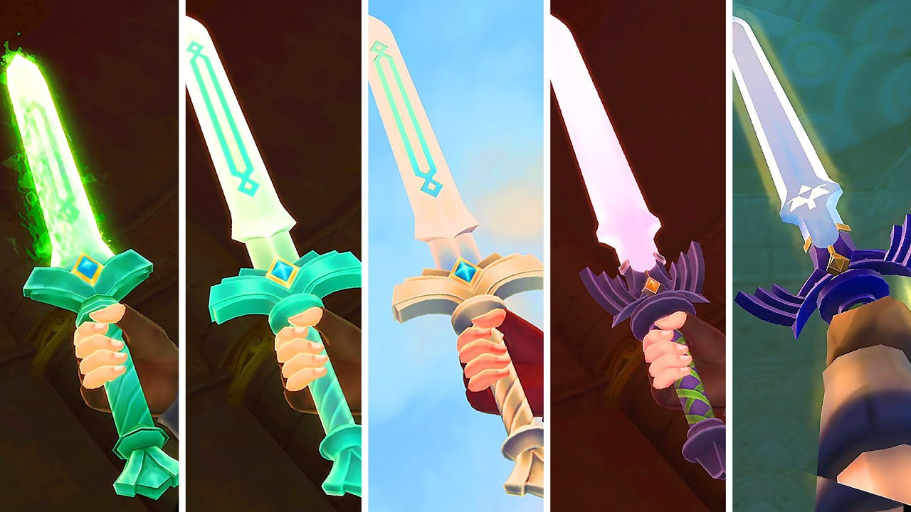

“Those who share the blood of the goddess and the spirit of the hero… They are eternally bound to this curse. An incarnation of my hatred shall ever follow your kind, dooming them to wander a blood-soaked sea of darkness for all time!”
The Legend of Zelda Timeline
In the beginning there were The Three Golden Goddesses, Din, Farore, and Nayru, beings of absolute power who came to the physical realm, and made the land, din, the goddess of power created the physical land, water, and skies. Nayru created all the laws that would govern the land, and Farore created all the creatures under the sky to uphold the laws. then they left the world in the hands of a fourth Goddess they created to be a steward over the land, and named her Hylia, before departing from the physical world. Where the three Goddesses left this world, three gold triangles were formed. Together, these three golden triangles held absolute power, and would grant a single wish from someone who possessed the three aspects of the golden goddesses: Power, Wisdom, and Courage. these traingles became known as the Triforce.
Skyward Sword
In the distant past, long before the events of Skyward Sword, the world was still in its infancy. The Goddesses had departed, leaving behind a realm teeming with life and magic. But darkness loomed—an unspeakable evil named Demise, who declared himself the Demon King.
Goddess Hylia, protector of her people, faced Demise in a fierce battle. The stakes were high, and fearing for her people’s safety, she made a desperate choice. Hylia used her divine powers to send the Triforce, along with her people, into the sky. There, on the floating island of Skyloft, they would be safe from Demise’s malevolence.
Yet, the Demon King’s power was overwhelming. Hylia was gravely wounded, and in a final act of sacrifice, she sealed Demise away. But she knew the seal wouldn’t last forever. To ensure the demon’s ultimate defeat, she needed a champion—a mortal who could wield the Triforce and purify their soul.
And so, Hylia blessed the soul of one of her closest warriors, ensuring their rebirth across the ages. Thus began the cycle of reincarnation. The hero, Link, would be reborn time and again, destined to face the forces of darkness.
In the era of Skyward Sword, Link is once more the chosen hero. The people of Skyloft live blissfully unaware of the vast land below the clouds. But when Zelda, the goddess reborn, is abducted by the enigmatic Ghirahim, Link descends to the surface to rescue her.
Guided by a mysterious spirit named Fi, Link uncovers the Goddess Sword hidden on Skyloft. This blade, infused with Hylia’s essence, will evolve into the legendary Master Sword—the bane of all evil. Link faces trials, purifying himself and his weapon.
With the Triforce’s power, Link confronts Demise. Victory seems assured, but Ghirahim intervenes. Using a forbidden gate of time, he whisks Zelda away to the ancient past, where Demise’s seal is still fresh. Ghirahim resurrects his master, forcing Link into a fateful duel.
As Demise breathes his last, his malevolence is absorbed into the Master Sword. But his curse lingers—a hatred that will haunt Link and Zelda across the eons, staining the land with bloodshed.
And so, the legend begins—a tale of courage, sacrifice, and an unbreakable bond between hero and goddess. The echoes of their struggle reverberate through time, shaping the destiny of Hyrule itself.
Ocarina of Time
After the cataclysmic clash with Demise, the world marched forward, its tapestry weaving new threads. But danger lingered—avaricious souls coveted the Triforce, yearning for its power. Among them, the malevolent sorcerer Vaati met defeat at the hands of a hero of old.
Yet another harbinger of Demise’s hatred emerged: Ganondorf, a formidable warlock hailing from the desert-dwelling Gerudo tribe. His ambition knew no bounds—he sought dominion over Hyrule, molding it to his dark desires.
But a young man stood resolute—a reincarnation of the legendary Hero, Link. Dwelling among the mystical Kokiri, he received a fateful task from the ancient Deku Tree: find Princess Zelda and thwart Ganondorf’s malevolence.
Zelda entrusted Link with yet another mission: gather the three Spiritual Stones. The Kokiri Emerald, bestowed by the Great Deku Tree; the Goron Ruby, cradled by the rock-dwelling Gorons atop Death Mountain; and the Zora Sapphire, guarded by the aquatic Zoras in their watery domains.
Link’s quest unfolded, each race cursed by Ganondorf’s touch finding solace through his deeds. Armed with the stones and a mystical Ocarina, he unlocked the path to the spirit realm. There, he drew the Master Sword, a blade housing its own ancient spirit. But the sword deemed him unready, ensnaring him for seven years until his strength matured.
Upon awakening, Link found a transformed Hyrule. Ganondorf had pursued him into the spirit realm, seizing the Triforce. Yet, as Ganondorf’s spirit remained impure, the Triforce split: Link embodied Courage, Zelda embodied Wisdom, and Ganondorf wielded Power.
Link’s new charge: locate the Seven Sages—not reincarnations, but beings blessed by Goddess Hylia. Their combined power could defeat Ganondorf or seal him away. Link confronted Ganondorf atop his castle, crumbling it in victory.
But Ganondorf revealed his trump card, transforming into a fearsome beast. The world’s fate hung in the balance. If Link fell, Ganondorf would wield the complete Triforce, becoming Man-Dra-Ganon, and the sages would seal him within the sacred realm.
If Link triumphed, Ganon would be trapped as a beast, immortal due to the Triforce of Power. And so, divergent paths emerged:
- Fallen Timeline: If Link lost, Ganon’s reign would stain the land.
- Child Timeline: If Link won and Zelda used the Ocarina of Time to send him back, a new era would unfold.
- Adult Timeline: If Link stayed, Hyrule’s destiny would take a different course.
And thus, the legend branched—courage, sacrifice, and the echoes of their struggle reverberated through time.

A Link to the Past

The Wind Waker
In the Adult timeline, Link matured—a hero who had sealed Ganon away in the spirit realm. He lived a life of purpose, yet time eventually claimed him. A century passed, and Ganon, wielding the Triforce of Power, shattered his prison, emerging to engulf Hyrule in darkness.
The people yearned for their fabled Hero of Time, but fate played a cruel hand—no hero was born. Desperate, the king beseeched the goddesses for salvation. And so, the reincarnated Zelda, channeling the ancient power of Hylia, invoked a cataclysmic change: the Great Sea swallowed the land, leaving only mountaintops as refuge.
Amidst this watery expanse, two souls were reborn: Link, named after the legendary hero, and Zelda, the goddess reborn. But Ganondorf, unvanquished, scoured the world, seeking Princess Hylia—the vessel of the Triforce of Wisdom. His twisted quest led him to abduct young Hylian girls, hoping one was Hylia in disguise.
Link’s younger sister fell victim to Ganondorf’s machinations, forcing him to sail with a band of pirates led by the spirited Tetra—a Hylian girl with secrets. In his pursuit, Link encountered an enigmatic talking boat—the King of Red Lions. Guided by this mystical vessel, Link unearthed the location of the Master Sword, sealed within the submerged castle of old Hyrule.
But the sword’s power had waned. No one had blessed it with sacred magic. Determined, Link set forth to restore the sages and reunite the Triforce of Courage, sundered by the very King of Red Lions who had flooded Hyrule. This new quest transformed Link into the Hero of Winds.
With a fully restored Master Sword and the Triforce of courage, Link faced Ganondorf once more. Alongside Tetra, who revealed herself as Zelda—the Goddess reborn—and the King of Hyrule (the King of Red Lions), they waged an epic battle against the great king of darkness.
Yet, even with their newfound gear and upgrades, they were no match for Ganondorf’s malevolence. As Ganondorf reached for the Triforce to fulfill his wish, the King of Red Lions intervened. His wish altered destiny: Hyrule would be destroyed, thwarting Ganondorf’s plans. The warlock’s mind fractured, and Link, wielding the Master Sword, finally vanquished him.
And so, the curtain fell on Ganondorf—the dark warlock who had once wielded the Triforce of Power. His demise marked the end of an era, but the echoes of courage, sacrifice, and unbreakable bonds would resonate through time, shaping the legend anew.

Twilight Princess
In the Child timeline, Link embarked on a fateful journey—returning to the past to warn the king of Ganondorf’s malevolence. The king, resolute, assembled seven sages, and a grand battle erupted across Hyrule. The Hylians fought valiantly, nearly wiping out the Gerudo people.
But during Ganon’s execution in the Gerudo Desert’s Arbiter’s Grounds, the unthinkable occurred: Ganondorf revealed the Triforce of Power, slaying one of the mages. The remaining sages, desperate, imprisoned Ganondorf in an ancient twilight realm—a place inhabited by the enigmatic Twili race.
Time flowed, and years later, a Twili named Zant broke free, unleashing shadow beasts to seize control of Hyrule. Princess Zelda, fearing for her people, surrendered to Zant and the shadow creatures. Yet one young man, Link, hailing from a humble village on Hyrule’s outskirts, refused to yield.
Zant, hungry for power, shrouded the world in twilight, imprisoning the light of countless spirits within shadow beasts. Link’s quest: rescue these spirits. But whenever he stepped into twilight, he transformed into a wolf. There, he encountered Midna—a cursed Twili—tasked with retrieving ancient relics known as the Fused Shadows to aid their fight against Zant.
Link secured the Fused Shadows and freed the spirits of light, but Zant cursed him to remain in wolf form. Consulting Princess Zelda, they learned that only the Master Sword could break the curse. Their journey led them to the shattered Mirror of Twilight, the gateway to the twilight realm.
Within the twilight, Zant had usurped Midna’s throne. Together, Link and Midna confronted him, discovering that Zant’s power was fueled by a “god”—none other than Ganondorf, wielding his piece of the Triforce. Midna’s fury consumed Zant, but their quest continued: reassemble the mirror fragments to reach the twilight realm.
As they confronted Ganondorf in Hyrule Castle, the battle intensified. Ganon transformed into a beast, manipulating Zelda as his puppet. But Midna sensed a change in Ganondorf. Outside the castle, they witnessed Ganondorf crush the Fused Shadows, only for Link to deliver a miraculous blow—stabbing him through the chest with the Master Sword.
And then, a divine intervention: the Triforce of Power deemed Ganondorf unworthy, abandoning him. The dark warlock’s life ended, closing this chapter of the timeline.

Breath of the Wild
beyond the very idea of time itself, Breath of the wild takes place so far into the future, that the other games from the series are grouped into what is called the Forgotten Era, or the Forgotten Past. Where civiliztions have rose and fell, and a single curse, has brought a great calamity upon the entire world, it is better to watch it yourself, but you must understand both the imprisoning war, and the age of Calamity Ganon. However, be forewarned, as these stories, are quite long, and very heavy on the heart. Tears of kingdom explains how the first Calamity Ganon came to be, and Breath of the Wild explains the story of Calamity Ganon, but know that the two stories intertwin, ultimatley starting with Tears of the Kingdom, bleeds into breath of the Wild, and then ends with Tears of the kingdom again.